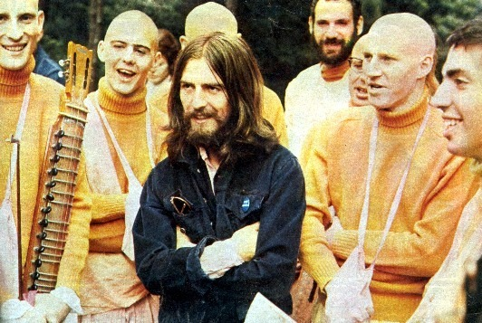

Após o fim dos Beatles em 1970, George Harrison seguiu uma carreira solo de destaque, unindo espiritualidade, rock e mensagens de paz. Seu primeiro álbum pós-Beatles, All Things Must Pass, foi um grande sucesso de crítica e público, trazendo canções marcantes como "My Sweet Lord".
George tinha uma profunda espiritualidade que se manifestou em sua vida e obra. Ele foi um estudioso e praticante do hinduísmo e da meditação, sendo especialmente influenciado pela tradição da Consciência de Krishna. Essa busca espiritual o levou a incorporar elementos da cultura indiana em sua música, como o uso de instrumentos como o sitar e a exploração de temas transcendentais em suas letras.
